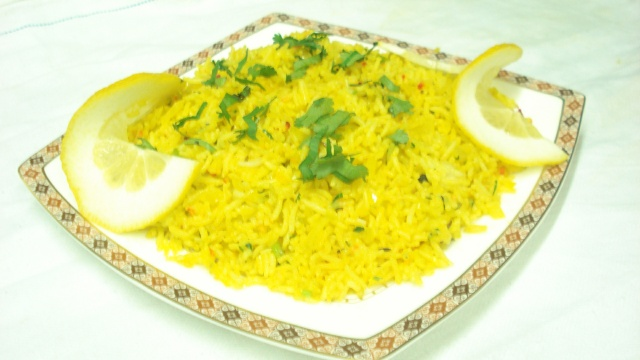

Rice - 1 cup
Lemon - 1 no
Dry red chilli -2
Mustard - ¼ tsp
Split black gram - ¼ tsp
Bengal gram - ½ tsp
Curry leaves - 5
Turmeric powder - ½ tsp
Salt - to taste
Oil - 1 tbsp
carrot - for garnish
Wash and cook rice. Even left over rice can be used.
Grate the zest of a lemon and keep aside. Now, cut the lemon and squeeze the juice discarding the seeds and keep it aside too.
Now in the a pan heat a tbsp of oil, pop some mustard seeds, bengal gram, split black gram, dry red chilly and curry leaves. (You can also add some peanuts.)
Add the turmeric powder, lemon zest and asafoetida and switch off. You can also add 1 tbsp of grated coconut for some added flavor.
Finally add the lemon juice and salt. Toss the rice with this till everything is well mixed.
Garnish with grated carrot and cilantro.